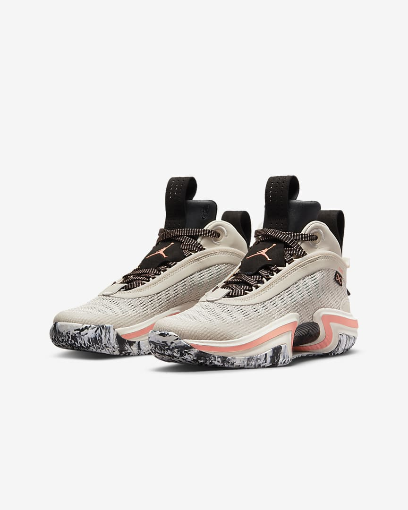
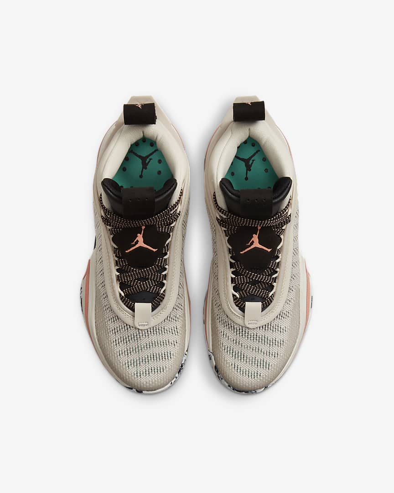

|

|

|
Find your fast in the Air Jordan XXXVI, the franchise's next expression of lightweight speed. Weighing in as one of the lightest Jordan game shoes to date, it has a thin, minimal upper that's reinforced with a wraparound ribbon of TPU for side-to-side stability. The responsive cushioning is designed to return your energy step for step to help elevate your game.
A hollowed-out section between the outsole and midsole helps reduce weight and exposes the shoe's stabilising shank (a piece of durable plastic that helps keep the shoe from twisting).
Colour Shown: Light Orewood Brown/Black/Phantom/Crimson Bliss
Light Flex
A dynamic, flexible tongue includes targeted padding over the top to ease lace pressure and to provide plush comfort without added weight.
Secure for Take-off
A 2-loop band system paired with high sidewalls provides side-to-side stability, whether you're cutting off the ball on defence or taking off to finish on offence.
Lightning Quick
A multi-directional outsole pattern provides stop-and-go traction for players who stay on their toes and use quickness to get to their spots.
|